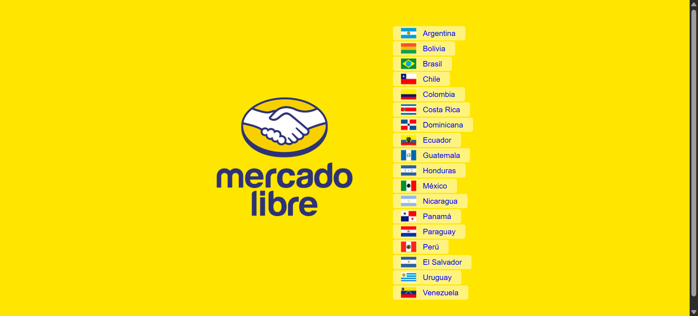
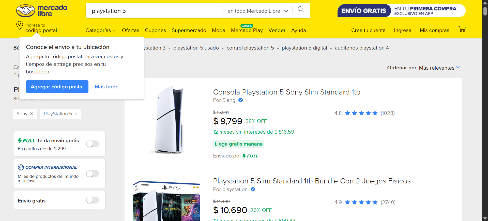
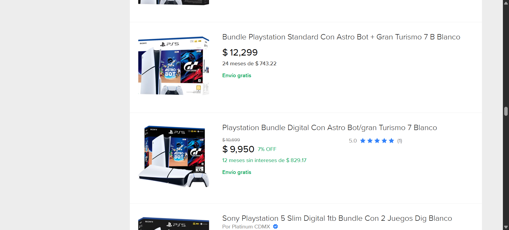
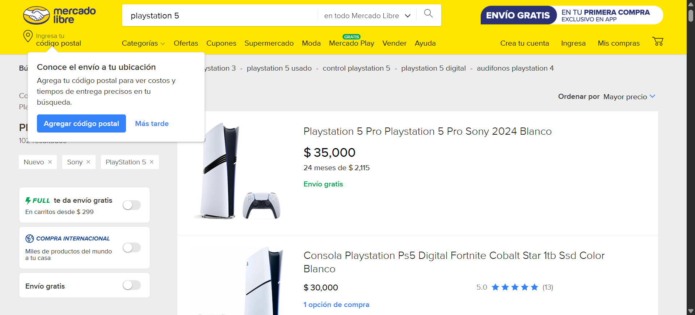

Reporte de ejecución - MercadoLibre
01_home

02_mexico
03_cookies
04_search

05_nuevo
06_cdmx

07_mayor_precio

08_resultados
Resultados
- Playstation 5 - $35,000
- PS5 vs PS4: diferencias clave para elegir la consola ideal - $2,115
- Los juegos exclusivos de PS5 que no te puedes perder - $30,000
- Diferencias entre la PS5 y la PS5 Pro: ¿cuál te conviene? - $34,999
- ¿A qué rendimiento se parece un PS5? - $25,199